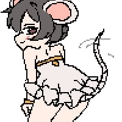
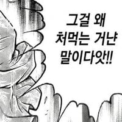

75 · 38 · 12 시간 전 · 원문
니들 get........
수집 당시 댓글 38개
환경파괴범캐리어 · 14 시간 전
엘드펠 · 14 시간 전
I got...
유아학교 · 14 시간 전
사실생각같은거안함 · 14 시간 전
Doqdrip · 14 시간 전
나이 좀 덜 먹었다고 면접 빠꾸먹은게 아니야 다 마음먹기에 달린거지안 좋은 생각 잊어먹고 먹고싶은 거나 말해봐 까먹지 말고
월급도둑 · 14 시간 전
개부이 따먹었어여...
어느기사 · 13 시간 전
1등도 먹고 꼴지도 먹고 2등은 왜 안먹냐구
↳ 답글 · 유저093 · 13 시간 전

왜용 · 13 시간 전
맞잖아 내꺼 되면 다 내가 먹은거잖아나도 나이 먹기 싫은데 자꾸 내꺼 되잖아.. ㅅㅂ
보유개드립콘 · 13 시간 전
양쪽에서 쌈싸먹었어요누워서떡먹기죠맞먹었어요못돼처먹었어요한자리해먹었어요
전산실김씨 · 13 시간 전
그러게 잘먹네 ㅋㅋㅋ
밤귀신 · 13 시간 전

Entfremdung · 13 시간 전
get, take, make : ???
가베라 · 13 시간 전
그.. 흑인이 빡치는 한국말은 따로 있는데요..
↳ 답글 · 익명
"소리 지르는"
↳ 답글 · 날마다잠자 · 13 시간 전
"니가"
년후특이점이온다 · 13 시간 전
그걸 다 먹냐!!
니소그 · 13 시간 전
"마키마 씨는 이런 맛이구나..."친구도 먹고 적도 먹고... 다 먹는 것인데
포틸러스 · 13 시간 전
Mtrap · 13 시간 전
따먹는다도 있는디외국에선 먹는다고 표현 안하나
↳ 답글 · 2002 · 13 시간 전
일본은 하던데
다마네기검사 · 13 시간 전
꿩 먹고 알 먹고 모리나? 다 먹는기야!!
삼일 · 13 시간 전
잘먹긴하네 ㅋㅋㅋ
펩시라임제로 · 13 시간 전
그러네 먹는다 표현이 많다zzz
드립은내가친다 · 13 시간 전
먹기는 지가 다먹은거 같은데
트라진 · 13 시간 전
근데 진짜 왜 먹지...?
↳ 답글 · Alchemy · 12 시간 전
친구도 먹고
↳ 답글 · 렙이상모쏠아다페인 · 11 시간 전
먹는것에 진심이라서...
이상하면치과가야지 · 12 시간 전
니네도 문장의 90퍼가takegethave 잖아 ㅋㅋㅋ
모두예할때아니요함 · 12 시간 전
먹지 못하는 사람은 죽는다
사파리고기 · 12 시간 전
나 챔피언 먹었어
에스비오피 · 12 시간 전
심지어 여자도 남자도 친구도 다 먹음
미네르바의부엉이 · 12 시간 전
늬들 take도 뭐 여기저기 다 가져다 쓰더만...
RESCENE · 10 시간 전
이래서 외국어 공부할 때 단어 뜻 다 외우려고 하면 안 됨예시로 외워야지
몰디브가서모스끼또한잔 · 10 시간 전
더위먹었네
인간성기사뿌뿌뽕 · 9 시간 전
나는 너의 밥이 되고 말았지`
생충잉 · 9 시간 전
get have 쓰몀서 무ㅗㄴ쌉소리야
임백두 · 35 분 전
외국인 입장이면 좀 더 편해진거 아닌가요? 마땅한 동사 생각안나면 먹었어요 하면 되잖아요 ㅎㅎ
댓글
수집 당시 댓글 38개
환경파괴범캐리어 · 14 시간 전
엘드펠 · 14 시간 전
I got...
유아학교 · 14 시간 전
사실생각같은거안함 · 14 시간 전
Doqdrip · 14 시간 전
나이 좀 덜 먹었다고 면접 빠꾸먹은게 아니야 다 마음먹기에 달린거지
안 좋은 생각 잊어먹고 먹고싶은 거나 말해봐 까먹지 말고
월급도둑 · 14 시간 전
개부이 따먹었어여...
어느기사 · 13 시간 전
1등도 먹고 꼴지도 먹고
2등은 왜 안먹냐구
· 유저093 · 13 시간 전

왜용 · 13 시간 전
맞잖아 내꺼 되면 다 내가 먹은거잖아
나도 나이 먹기 싫은데 자꾸 내꺼 되잖아.. ㅅㅂ
보유개드립콘 · 13 시간 전
양쪽에서 쌈싸먹었어요
누워서떡먹기죠
맞먹었어요
못돼처먹었어요
한자리해먹었어요
전산실김씨 · 13 시간 전
그러게 잘먹네 ㅋㅋㅋ
밤귀신 · 13 시간 전

Entfremdung · 13 시간 전
get, take, make : ???
가베라 · 13 시간 전
그.. 흑인이 빡치는 한국말은 따로 있는데요..
· 익명
"소리 지르는"
· 날마다잠자 · 13 시간 전
"니가"
년후특이점이온다 · 13 시간 전
그걸 다 먹냐!!
니소그 · 13 시간 전
"마키마 씨는 이런 맛이구나..."
친구도 먹고 적도 먹고... 다 먹는 것인데
포틸러스 · 13 시간 전
Mtrap · 13 시간 전
따먹는다도 있는디
외국에선 먹는다고 표현 안하나
· 2002 · 13 시간 전
일본은 하던데
다마네기검사 · 13 시간 전
꿩 먹고 알 먹고 모리나? 다 먹는기야!!
삼일 · 13 시간 전
잘먹긴하네 ㅋㅋㅋ
펩시라임제로 · 13 시간 전
그러네 먹는다 표현이 많다zzz
드립은내가친다 · 13 시간 전
먹기는 지가 다먹은거 같은데
트라진 · 13 시간 전
근데 진짜 왜 먹지...?
· Alchemy · 12 시간 전
친구도 먹고
· 렙이상모쏠아다페인 · 11 시간 전
먹는것에 진심이라서...
이상하면치과가야지 · 12 시간 전
니네도 문장의 90퍼가
take
get
have 잖아 ㅋㅋㅋ
모두예할때아니요함 · 12 시간 전
먹지 못하는 사람은 죽는다
사파리고기 · 12 시간 전
나 챔피언 먹었어
에스비오피 · 12 시간 전
심지어 여자도 남자도 친구도 다 먹음
미네르바의부엉이 · 12 시간 전
늬들 take도 뭐 여기저기 다 가져다 쓰더만...
RESCENE · 10 시간 전
이래서 외국어 공부할 때 단어 뜻 다 외우려고 하면 안 됨
예시로 외워야지
몰디브가서모스끼또한잔 · 10 시간 전
더위먹었네
인간성기사뿌뿌뽕 · 9 시간 전
나는 너의 밥이 되고 말았지`
생충잉 · 9 시간 전
get have 쓰몀서 무ㅗㄴ쌉소리야
임백두 · 35 분 전
외국인 입장이면 좀 더 편해진거 아닌가요? 마땅한 동사 생각안나면 먹었어요 하면 되잖아요 ㅎㅎ